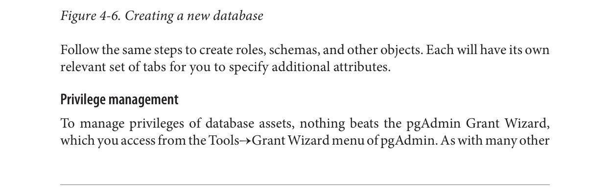

Tạo Tài sản Cơ sở Dữ liệu và Thiết lập Quyền
pgAdmin cho phép bạn tạo tất cả các loại tài sản cơ sở dữ liệu và gán quyền.
Tạo cơ sở dữ liệu và các tài sản cơ sở dữ liệu khác
Tạo một cơ sở dữ liệu mới trong pgAdmin rất dễ dàng. Chỉ cần nhấp chuột phải vào phần cơ sở dữ liệu của cây và chọn Cơ sở Dữ liệu Mới, như được hiển thị trong Hình 4-6. Tab định nghĩa cung cấp một menu thả xuống để bạn chọn một cơ sở dữ liệu mẫu, tương tự như những gì chúng ta đã làm trong “Cơ sở Dữ liệu Mẫu” trên trang 27.
Thực hiện các bước tương tự để tạo vai trò, lược đồ và các đối tượng khác. Mỗi đối tượng sẽ có bộ tab liên quan riêng để bạn chỉ định các thuộc tính bổ sung.
Quản lý quyền
Để quản lý quyền của các tài sản cơ sở dữ liệu, không gì bằng Trình hướng dẫn Cấp quyền pgAdmin, mà bạn có thể truy cập từ menu Công cụ→Trình hướng dẫn Cấp quyền của pgAdmin. Như với nhiều
62|Chương 4: Sử dụng pgAdmin